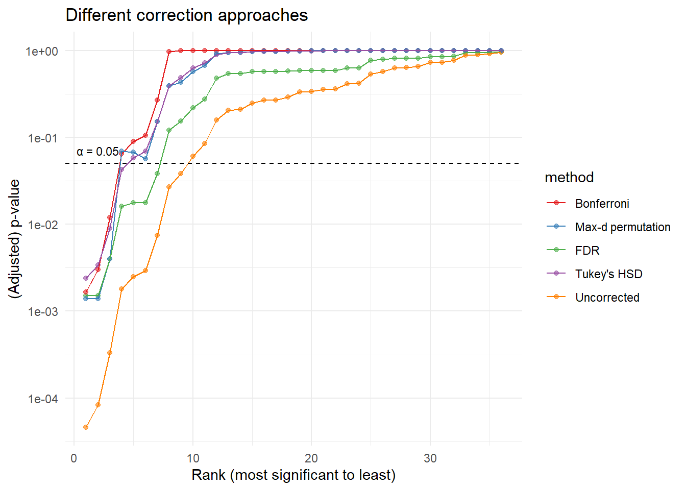

Session 15: Post hoc tests & multiple comparisons
Last week we introduced a new type of statistical test that helps us determine whether there is a significant difference in means when comparing more than two groups: one-way Analysis of Variance (ANOVA). We discussed that the null hypothesis in this case states that all group means are equal (that is, they come from the same population). Therefore, if we run an ANOVA and reject the null hypothesis, we conclude that at least one group mean differs from the others. Put differently, we can say that the omnibus test is significant.
However, that is all we can conclude from the ANOVA alone. To gain a more fine-grained understanding of the differences in our data, we need to conduct follow-up analyses, referred to as post hoc tests. This short video explains the main concepts. The idea is straightforward: we perform individual comparisons between every possible pair of groups (often referred to as pairwise comparisons) to identify exactly where the differences lie. These comparisons can be carried out using tests you are already familiar with, such as t-tests or, preferably, permutation tests.
To illustrate the most important aspects of post hoc testing, we introduce a new data set that can be downloaded by clicking the button below.
Read in the
.csvfile and plot each group’s mean with its standard error of the mean (SEM). Next, run an ANOVA to assess whether there is any overall evidence of differences among the group means. Based on the p-value from the ANOVA, would you consider it appropriate to proceed with post hoc tests in this case? Briefly justify your answer.Even when the omnibus ANOVA is not statistically significant, it is still possible to obtain “significant” results from multiple pairwise comparisons. In fact, the lack of a significant ANOVA suggests that any apparent differences between groups are small and consistent with random variation, which makes any isolated significant post hoc result especially likely to be a false positive. Because each comparison carries its own chance of a Type I error, running many tests increases the probability that at least one will appear significant purely by chance. Let us see how this plays out in the data at hand.
How many unique pair-wise comparisons do we need to perform in this case (remember that for example testing A vs B will be the same as testing B vs A)? Can you figure out a formula that will calculate the number of comparisons for any number of groups?
We will not ask you to run manual pairwise permutation tests for all groups in the data you just analysed with ANOVA. Instead, use the
rcompanionpackage and thepairwisePermutationTest()function, which implements computational optimizations to perform these tests efficiently. Apply this function to carry out permutation based post hoc tests. Thep.valuecolumn in the output reports the unadjusted significance level for each pairwise comparison (you can ignore thep.adjustcolumn for now). Are there any significant pairwise comparisons in these data?Plot a histogram of the p values (you may need to ensure that the p-values from
pairwisePermutationTest()are coded as numeric). What pattern would you expect to see if there were an enrichment of true positive comparisons in the data? How might the distribution look if there were no true differences between groups? Which of these patterns does your histogram most closely resemble?Watch this video. Steven explains how multiple comparisons affect the family wise error rate and introduces the Bonferroni method, which adjusts the significance threshold by dividing the original alpha by the number of tests. Instead of adjusting the alpha level, we want you to calculate Bonferroni adjusted p-values. As a hint, think about how the adjustment to the alpha could be mirrored by scaling the original p-values in a similar way. Use the
mutate()function to add the adjusted p-values to the output from thepairwisePermutationTest()function. Make sure no adjusted value exceeds 1, for example usingifelse()to set any value greater than 1 to 1.Set the
method =argument inpairwisePermutationTest()tobonferroniand compare the output (this time focusing on thep.adjustcolumn) to the adjusted p-values you calculated manually above.What are your conclusions from the analyses you have just performed? In your answer, consider the ANOVA result, the unadjusted pairwise comparisons, the histogram of p-values, and the effect of the Bonferroni correction.
Applying a correction for multiple comparisons, such as the Bonferroni adjustment, controls the inflated Type I error rate and typically removes spurious results. However, as Steven briefly mentioned in the video, this comes at a cost in terms of statistical power. Because the correction becomes more stringent as the number of tests increases, it can make it difficult to detect real differences, increasing the risk of Type II errors (failing to detect a true effect). While the Bonferroni method is easy to understand and straightforward to apply, it is often overly conservative and can be suboptimal when many comparisons are performed or when tests are not independent. Pairwise tests are not independent because they are based on the same underlying data and share observations across comparisons (for example, the comparison between A and B and the comparison between A and C both involve group A), which introduces correlations between tests.
We will demonstrate how the Bonferroni adjustment compares to other multiple comparisons correction methods using a data set that can be downloaded by clicking the button below.
- Explore the data by plotting the group means and SEM. Next, run an ANOVA to assess overall differences among the groups. Then, use the
pairwise_t_test()function fromrstatixto run theory-based post hoc comparisons (we of course recommend permutation tests, but it can be helpful to know how to run theory-based post hoc tests for multiple comparisons). Finally, visualize the distribution of the raw p-values (thepcolumn) by plotting a histogram to see whether there is an enrichment of low p-values that might reflect a true signal in the data.
Looking at the histogram of p-values from your post hoc tests, you can see whether there is an enrichment of small p-values, which may indicate true signals among the comparisons. Wouldn’t it be useful if we could somehow use this information to separate likely true positives from false positives, rather than treating all tests equally conservatively as in Bonferroni? This is exactly what the Benjamini-Hochberg method does: it controls the false discovery rate by taking into account the distribution of p-values, allowing us to retain more true positives while still limiting false positives.
We return to StatQuest and this video (False Discovery Rates, FDR, clearly explained). Josh explains how the Benjamini-Hochberg method corrects for multiple testing, and around the 14:40 mark he begins to show the math behind the method. We will walk you through this step by step and demonstrate how it can be implemented in R code.
Now we will calculate Benjamini-Hochberg FDR-adjusted p-values starting from the p column in your pairwise_t_test() output.
- First we sort the p-values from smallest to largest using
arrange(p). This step is important because the FDR procedure considers the rank of each p-value. The smaller the p-value, the more likely it reflects a true signal.
- First we sort the p-values from smallest to largest using
- Next, assign a rank to each p-value with
rank = row_number()and record the total number of tests (n = n()). The rank tells you the position of each p-value in the sorted list.
- Next, assign a rank to each p-value with
- Calculate the scaled p-value using
b = p * n / rank. This step adjusts each p-value by considering both its rank and the total number of comparisons. Smaller p-values get scaled less, while larger p-values get scaled more. Conceptually, this uses the pattern you saw in the histogram. If there is an enrichment of small p-values, this step helps separate likely true positives from false positives.
- Calculate the scaled p-value using
- Compute the FDR-adjusted p-value (
p_fdr_adj = cummin(rev(b)) |> rev()). We take a cumulative minimum from largest to smallest so that the adjusted p-values are monotonic, meaning they do not decrease as rank increases, ensuring valid FDR control.
- Compute the FDR-adjusted p-value (
Putting all of this together, the code looks like this:
output |>
arrange(p) |>
mutate(rank = row_number(),
n = n(),
b = p * n / rank,
p_fdr_adj = cummin(rev(b)) |> rev())A histogram of unadjusted p-values shows you where the small p-values cluster. The Benjamini-Hochberg procedure leverages this information: clusters of low p-values are treated as more likely true positives, while isolated larger p-values are more likely false positives.
- Rerun the
pairwise_t_test()function, this time setting thep.adjust.method = "bonferroni"argument to obtain Bonferroni adjusted p-values. Next, starting from the output of this function, calculate Benjamini-Hochberg FDR-adjusted p-values as shown above. Finally, compare the Bonferroni adjusted p-values to the FDR-adjusted p-values. How do they differ in terms of which comparisons are considered significant? How does this relate to the pattern of p-values you observed in the histogram?
As we have seen, when comparing multiple groups, we risk inflating the acceptable false-positive rate, a problem that scales with the number of comparisons made. We could opt to perform multiple tests, identify p-values for each one and then retroactively ‘adjust’ them to control for each test performed. Bonferroni and FDR were two such approaches. Alternatively, we can simultaneously account for performing multiple tests by adjusting the null distribution we draw p-values from! Here, we talk about two such approaches: maximum-statistic pooling via permutation and Tukey’s Honestly Significant Difference (HSD) tests.
- In maximum-statistic pooling, we iteratively shuffle data across groups, compute the Cohen’s d (or t-statistic) for each comparison and then select the maximum absolute Cohen’s d, \(|max(d_1...d_n)|\). By pooling the maximum Cohen’s d across multiple tests, we make the null distribution of Cohen’s d robust against the effect of the increasing probability that at least one of the group comparisons yields a false positive or inflated Cohen’s d due to random sampling. Now, when we compare the observed pairwise d value to the distribution, we need not worry about adjusting the p-values calculated.
- We start below by summarizing what we will require to calculate Cohen’s d: the means, variances and sample sizes for each group. Fill in the blanks and test the code chunk on the second dataset you downloaded. Replace
datawith whatever you labelled that dataset.
- We start below by summarizing what we will require to calculate Cohen’s d: the means, variances and sample sizes for each group. Fill in the blanks and test the code chunk on the second dataset you downloaded. Replace
sum <- data |>
group_by(______) |>
summarize(mean = mean(_____),
var = var(_____),
n = ____)- We then need to find each pairwise comparison. To facilitate calculating each Cohen’s d, we’ll align the means, variances and number of observations per group on the same row.
cross_joinwill take each row of the first argument and combine it with every row in the second argument. Here, it creates a new tibble that generates each pairwise combination and attaches a1suffix to the first group’s variables and a corresponding2to the second. We then filter rows to ensure we remove self-pairs (i.e. A-A) and redundant permutations (A-B and B-A):
- We then need to find each pairwise comparison. To facilitate calculating each Cohen’s d, we’ll align the means, variances and number of observations per group on the same row.
... |> cross_join(sum, sum,
suffix = c("1","2")) |>
filter(group1 < group2) - We will now derive the Cohen’s d for each comparison, returning only each group and Cohen’s d:
... |> mutate(d = (_________) /
sqrt(_______ / (_______)),
d = abs(d)) |>
select(group1, group2, d)- Now wrap these code blocks into one function, making sure that you embrace (
{{}}) the group and outcome variables.
- Now wrap these code blocks into one function, making sure that you embrace (
- Using
break_assoc()from earlier sessions and your new function, we’ll write amaploop to randomly permuteyacross 10,000 iterations, returning the maximum Cohen’s d in each iteration.
- Using
perms <- map(____, \(i) {
data |>
________ |>
________ |>
slice_max(d) |>
pull(d)
}) |>
list_c()- Calculate the p-values associated with the Cohen’s d of each pair (i.e.
group1andgroup2). You will note that perms is a vector of Cohen’s d; when calculating the p-value, you can mutate a new p_adj variable and usemean(null_dist > d)to find the p-value of each observed pairwise Cohen’s d.
- Calculate the p-values associated with the Cohen’s d of each pair (i.e.
- Append these p-values you calculated to your tibble of raw, Bonferroni- and Benjamini-Hochberg-corrected p-values. You can use
left_joinwith group1 and group2 as keys to ensure the ordering of pairs is the same.
- Append these p-values you calculated to your tibble of raw, Bonferroni- and Benjamini-Hochberg-corrected p-values. You can use
- We now turn to an adjacent and commonly used approach in post hoc testing: Tukey’s HSD.
Fundamentally, Tukey’s HSD addresses the same challenge as the Cohen’s max-statistic pooling: the more comparisons performed, the greater the probability of seeing a larger mean difference between groups purely by chance. In a Tukey’s HSD, we consider the range of group means, a fact conveniently captured in the name of the distribution as the studentized range distribution. For Cohen’s d, we standardized the mean difference by dividing by the square root of the pooled variances of the two groups. For Tukey’s HSD, we instead standardize the range by accounting for the variability within all groups, summarized by the mean square error (MSE). When all groups have the same number of samples, the MSE is simply the mean of the within-group variances, something we saw last week when calculating sum of squares within (SSW). The square root is taken of MSE divided by the number of samples per group, n. In other words, we divide the range by the standard error, making the test sensitive to the total sample size, number of groups and variability of observations within each group.
Let’s work through the steps to calculate q-values.
- First, we calculate the means and variances of each group. Unlike the max-d permutation, we’re not explicitly testing pairwise differences:
sum <- data |>
group_by(group) |>
summarize(mean = mean(y),
var = var(y),
n = n())- Next, we compute the difference between the maximum and minimum means and calculate the standard error. These can be used to compute the q-statistic by dividing the difference by the standard error
... |>
summarize(
diff = max(mean) - min(mean),
n = mean(n),
mse = mean(var),
se = sqrt(mse / unique(n)),
q = diff / se) |>
pull(q)- Now wrap this code into a function and, like before, use
break_assoc()to permute y in a map 10,000 times. Feed each permuted dataset into your function, collecting q-values, thereby creating a null distribution of q-values.
- Now wrap this code into a function and, like before, use
- Plot a histogram of the q or studentized distribution. Is it normal?
- We will now compute adjusted p-values via Tukey’s HSD using the null distribution you created! For each pairwise comparison, calculate the observed difference in means and divide it by the standard error.
sum <- data |>
group_by(group) |>
summarize(mean = mean(y),
var = var(y),
n = n())
se <- sum |> summarize(
mse = mean(var),
se = sqrt(mse / mean(n))) |>
pull(se)
q_values <- cross_join(sum, sum,
suffix=c("1","2")) |>
filter(group1 < group2) |>
mutate(q = abs(mean1 - mean2) / se) |>
select(group1, group2, q) - You have now computed the observed q values. Using a similar approach as in question 4 part 6, determine the probability of finding each observed q-value per pair of groups by chance. Should your test be one-sided or two-sided? If you succeeded in running this step, then you have just performed a post hoc Tukey’s HSD test. Append these p-values to your tibble of p-values for Bonferroni, FDR and max-Cohen’s d pooling.
- You will find it faster to use the base R
TukeyHSD()function. Compare the p-values you found usingTukeyHSD()to those you generated via permutation.
- You will find it faster to use the base R
- We’ve explored different methods for accounting for multiple tests. Out of the plethora, which should be used? Below, we’ll compare the different approaches.
- First, sort your tibble of p-values under each correction method by raw p-values in increasing order of magnitude (i.e.
arrange). Then, pivot longer to create one column of p-values and another, the correction (or lack of correction) method used. Plot these using ggplot, with rank (order of p-value) along x and the p-value on y, colored by correction method. Try reproducing the figure shown below, making note of the log10 scale of the y axis.
- First, sort your tibble of p-values under each correction method by raw p-values in increasing order of magnitude (i.e.

- Reflect on what you see for each correction method. Which is most conservative? Which is least?
- Create a similar plot for the first dataset you downloaded and compare the uncorrected p-values with each correction method.
- The final thing after running an ANOVA, finding a significant omnibus test p-value and continuing with post hoc tests, is to plot the results. Often times we see plots in papers showing group stats (as boxplots or bar graphs or something of that sort) with annotations added to communicate the significance of pair-wise comparisons. This is easy to do if you know how to make ggplots, with help from the
ggpubrandrstatixpackages. Let’s revisit thepenguinsdata. Investigate some relationship in this data set you find interesting, create an appropriate plot and check out this article on how to add p-value annotations. You will probably find the Pairwise comparisons section most helpful. Note that a function namedt_test()from therstatixpackage is used here. This is the same name as a function in theinferpackage we have used before, so if you run into problems with the code in the article, try unloading theinferpackage.
- The example in the article shared above uses theory-based t-tests (that is what the
t_test()function from therstatixpackage does) to calculate the post hoc p-values. But what about if you instead (as you should) prefer to use p-values from permutation tests. Here is another article describing how you can add p-values computed from elsewhere. Add multiple comparisons corrected (pick your favorite correction method) permutation-based (pick your favorite way to run the tests) p-values to your penguins plot.